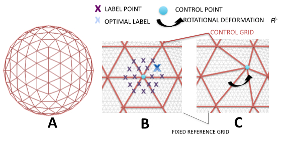

Contents
- Introduction
- User Guide
Release
MSM will be released in the next version of FSL but is currently available by request. Please email the list or emmar@fmrib.ox.ac.uk if you are interested in getting a copy
Overview
MSM (Multimodal Surface Matching) is a tool for registering cortical surfaces. The tool has been developed and tested using FreeSurfer extracted surfaces. However, in principle the tool with work with any cortical surface extraction method provided the surfaces can be mapped to the sphere. The key advantage of the method is that alignment may be driven using a wide variety of univariate (sulcal depth, curvature, myelin), multivariate (Task fMRI, or Resting State Networks) or multimodal (combinations of folding, myelin and fMRI) feature sets.
The main MSM tool is currently run from the command line using the program msm. This enables fast alignment of spherical cortical surfaces by utilising a fast discrete optimisation framework (FastPD: Komodakis 2007), which significantly reduces the search space of possible deformations for each vertex, and allows flexibility with regards to the choice of similarity metric used to match the images.
In addition to the main tool we supply a number of post processing functions:
msmapplywarp
msmresample
average_surfaces
estimate_metric_distortion
If you wish to use this tool, please reference our paper in any resulting publication.
Method fundamentals
As mentioned above MSM matches two spherical surfaces known as the input and reference. Registration is performed by warping a low resolution regular Control Point (CP) Grid. At each iteration of the registration, every control point is deformed independently according to one of a small set of local rotations. The endpoints of these rotations are defined by a set of evenly spaced points (labels) that surround the control point, which are determined by placing a higher resolution Sampling Grid over each CP. This warp is then propagated to the (higher resolution) input mesh using mesh interpolation.
Example of label set overlaid on a control point grid 
Choice of label (and therefore local deformation) is dependent on the similarity of the input and reference mesh features following the proposed warp. Therefore, for each control point, an overlapping patch from the input_mesh is transformed according to each local rotation, and its similarity with the reference features at that position is assessed. The optimal label choice balances the desire for optimal image matching with a requirement that the deformation should be as smooth as possible. Note, rather than using the full feature sets, data is typically downsampled and smoothed onto regular template surfaces known as the datagrid as we find this speeds computation without appreciably downgrading the quality of the alignment.
An important characteristic of the MSM framework is that the registration is performed over a series of stages. The registration can be initialised using an affine alignment step that should be able to correct global transformation differences between images. It then proceeds over a series of discrete registration steps where the resolution of the control point grid (that warps the input surface) is increased at each stage. At each stage of the discrete registration the registration performs a series of iterations, where control points are deformed as described above. Thus the registration proceeds in a coarse to fine fashion, where if large deformations are required to align the two surfaces these will be corrected for in the early stages of the registration and the final steps are for alignment of fine detail. For more details please see our NeuroImage paper.
The Human Connectome Project - visualisation software and file formats
The HCP consortium (http://www.humanconnectome.org/) provide a suite of surface processing and visualisation tools that can be used very effectively together with MSM. In particular these tools refine the FreeSurfer pipeline, and supply pipelines for directly mapping functional and diffusion data onto the surface. Surfaces are supplied in CIFTI and GIFTI formats and can be visualised using the very flexible HCP visualisation tool wb_view. Scripts for processing your data following the HCP pipeline can be found at http://www.humanconnectome.org/documentation/HCP-pipelines/. If your data does not conform to the HCP protocol, specifically you have no T2 or different task protocols, please contact the FSL list.
Referencing
Emma C. Robinson, S. Jbabdi, M.F. Glasser, J. Andersson, G.C. Burgess, M.P. Harms, S.M. Smith, D.C. Van Essen, M. Jenkinson, MSM: A new flexible framework for Multimodal Surface Matching, NeuroImage, Volume 100, 15 October 2014, Pages 414-426, ISSN 1053-8119, http://dx.doi.org/10.1016/j.neuroimage.2014.05.069.
Komodakis, N., Tziritas, G., 2007. Approximate labeling via graph cuts based on linear programming. Pattern Analysis and Machine Intelligence, IEEE Transactions on 29 (8), 1436{1453.
And, a series of pre-processing and batch processing scripts for your convenience:
BatchprocessMSM